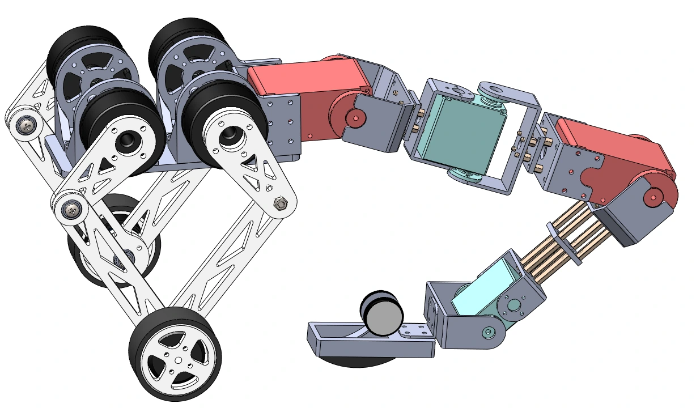
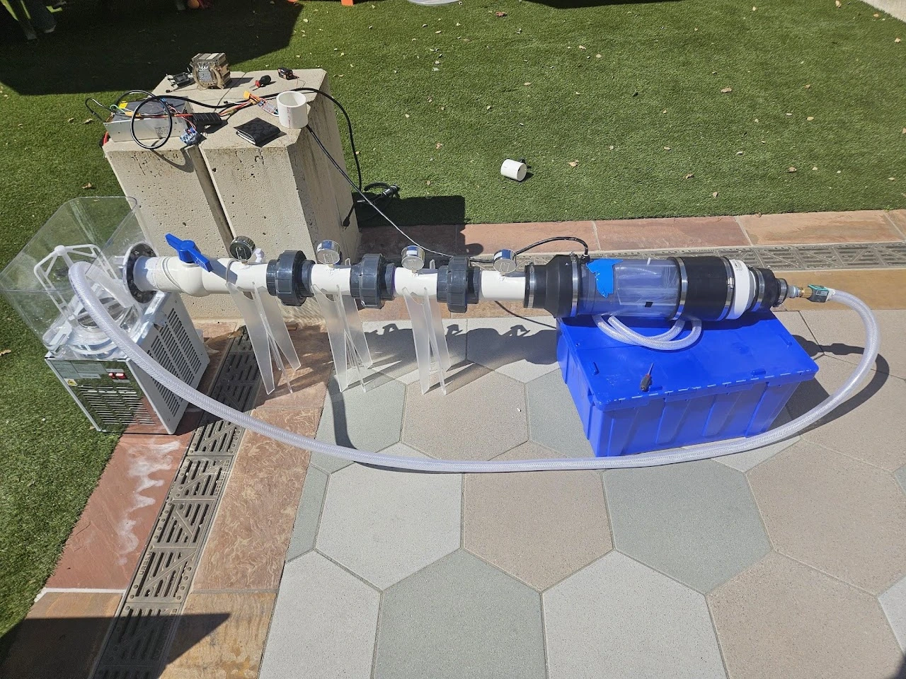
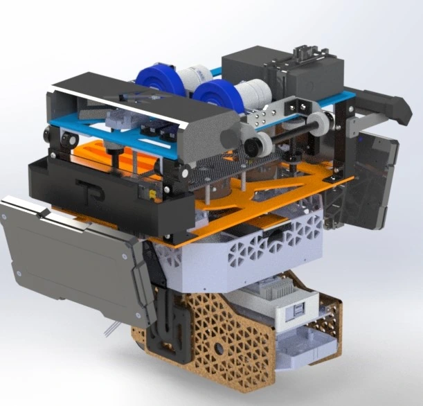

Soft materials / Haptics
Haptic Surface
Combining a thermally softened polymer structure with magnetic loading to develop shape-changing tactile interfaces.
Prototype result: magnetic attraction and repulsion
Mechanical engineer / Researcher
I'm Zongyu Gao, a mechanical engineering researcher at Carnegie Mellon. I design, build and test prototypes for tactile interfaces, wearable devices and robotic systems.
Selected work
Six case studies connect project objectives, individual contributions, design decisions and test results. Each includes the skills and evidence behind the work.
Soft materials / Haptics
Combining a thermally softened polymer structure with magnetic loading to develop shape-changing tactile interfaces.
Prototype result: magnetic attraction and repulsion

Smart materials / Wearables
Material synthesis, characterization and rapid prototyping for adjustable wearable compression.
Published study: approximately 20–60 mmHg

Robot mechanics / Simulation
A three-joint tail and posture-dependent torque analysis for a wheel-legged robot.
Three joints · posture and mass sweeps

Experimental hardware / Fluid systems
A recirculating apparatus for comparing prefilters through flow and pressure measurements.
Team tests: 4.5 gal/min · about 2 psi drop

Vehicle systems / Mechatronics
Camera hardware integration, vision data collection and model training for a small autonomous-parking vehicle.
Team test: recognition worked; control handoff needed repair

Mechanical design / Fabrication
Panel-to-turret interfaces, manufacturing constraints and assembly fit in a competition robot.
Custom metal, polymer and printed components
Background
I develop materials and mechanisms for devices that interact with people.
At Carnegie Mellon's Soft Machines Lab, I lead Haptic Surface research, combining thermally tunable structures with magnetic actuation. Previously, in UC San Diego's Cai Lab, I worked on liquid crystal elastomers for compression therapy and co-authored a paper in Advanced Healthcare Materials.
My experience spans material synthesis, experimental design, prototype fabrication, mechanical interfaces and robot simulation. I am drawn to engineering teams building wearable devices, soft robots and hardware with a clear human application.
Mechanical design, tolerances, actuator-demand analysis and parameter-based simulation.
SolidWorks · Fusion 360 · Onshape
Python · MATLAB · ANSYS
Soft-material synthesis, experimental fixtures, rapid fabrication and electromechanical integration.
CNC · Laser cutting · 3D printing
Mechanical assembly · Embedded heating
Thermomechanical characterization, controlled experiments and engineering data analysis.
DSC / DMA · Oscilloscopes
Thermal studies · Experimental analysis
Academic background
Aug 2025 – Expected May 2027
M.S. Mechanical Engineering — Research
Soft Machines Lab · Advisor: Professor Carmel Majidi
Degree conferred March 2025
B.S. Mechanical Engineering
Specialization in Controls and Robotics
Co-authored publication
G. Dong, F. Zhao, Z. Gao & S. Cai
Advanced Healthcare Materials, 14(3), 2402881 (2025)
Contact
For engineering and research opportunities in haptics, wearables, soft robotics and mechatronic systems.